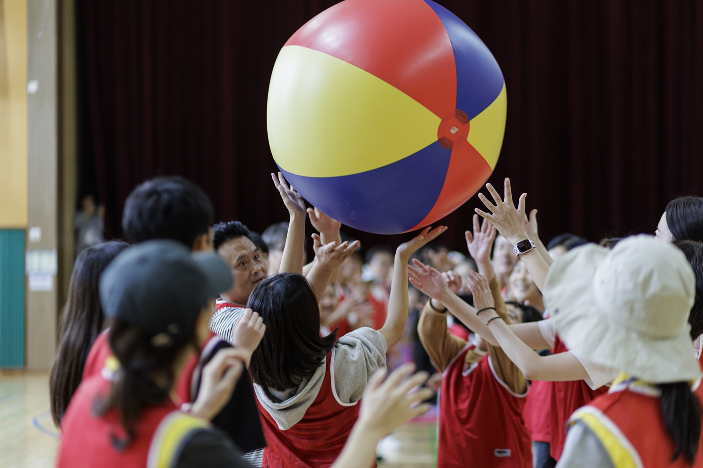

마포구, 2027년 주민참여예산 후보 17개 사업 온라인 투표 실시
9월 15일 오후 6시 마감, 참여자 100명 커피쿠폰 추첨

[시사포커스 / 김재록 기자] 마포구(구청장 유동균)는 주민의 의견을 2027년 예산에 반영하기 위해 오는 15일 오후 6시까지 ‘주민참여예산 사업 선정 투표’를 진행한다. 마포구청에 따르면, 주민참여예산은 주민이 직접 지역에 필요한 사업을 제안하고 주민 투표를 거쳐 예산 편성에 반영하는 제도로, 재정 운영의 투명성과 공정성을 높이는 데 의의가 있다. 구는 지난 5월 1일부터 6월 30일까지 2027년 주민참여예산 사업 제안을 공모해 일반 주민참여 제안 83건을 접수했으며, 소관 부서의 실현 가능성 검토를 거쳐 최종 17개 사업을 주민투표 후보로 선정했다.
후보에 오른 17개 사업은 복지·보건, 교육·체육, 도시·환경, 생활안전 등 다양한 분야에 걸쳐 있다. 복지·보건 분야에서는 뇌병변·발달장애인의 평생교육과 예술 활동 지원 사업, 취약계층 아동·청소년과 부모를 위한 통합 심리지원 사업, 청소년 마음건강 증진 사업 등이 포함됐다. 교육·체육 분야에는 AI·디지털 일자리 교육과 미래역량 페스타, 영유아를 위한 찾아가는 클래식 음악회 등이, 도시·환경 분야에는 ‘마포 환경 대축제’, 생활안전 분야에는 상암동 성당 앞 골목 보안등 추가 설치 사업이 후보에 올랐다. 유동균 마포구청장은 “주민참여예산은 우리 구에 있으면 좋겠다고 생각한 사업을 직접 제안하고, 예산의 우선순위를 함께 정하는 제도”라며 “내년 마포에 꼭 필요한 사업을 주민 여러분의 손으로 골라주시길 바란다”고 말했다.
투표는 마포구민과 마포구 소재 사업장·기관·단체·학교 등에 소속된 사람이면 누구나 마포구 주민참여예산 포털에서 본인 인증 후 참여할 수 있다. 참여자 가운데 100명을 추첨해 모바일 커피쿠폰을 제공할 예정이다. 구는 예산 범위 안에서 주민투표 결과를 반영해 주민참여예산위원회 심의를 거쳐 최종 사업을 선정할 계획이며, 선정된 사업은 2027년 본예산에 반영해 추진한다.